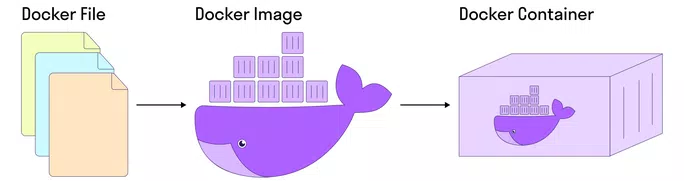

Docker—платформа для управления контейнерами, которая позволяет легко создавать, развертывать и запускать приложения в изолированных средах.
Основная задача Docker — запустить приложение и при этом не тратить много времени на настройку.
Docker работает по принципу морских грузоперевозок. Представим грузовой корабль с большим количеством одинаковых контейнеров на борту. В каждом таком контейнере — разные типы грузов. Нам не нужно думать о том, как распределять разные типы грузов, но все контейнеры одинаковые. Грузить и разгружать такие контейнеры быстро и эффективно.
Docker со всеми его настройками и зависимостям помещается в контейнер и благодаря единому механизму переносится в нужное место. Например, с компьютера разработчика на ваш компьютер для тестирования.
Docker используется для того, чтобы:
быстро протестировать фикс/фичу локально;
запустить быстро приложение, на установку и настройку которого уходит много времени;
запустить автотесты в разных браузерах, используя определенные библиотеки
Два основных понятия в Docker — Docker Image и Docker Container
Docker Image создается на основе Docker-файла, в котором указывается всё необходимое для работы приложения.
Таким образом, мы берем приложение со всеми его настройками и зависимостями, помещаем в контейнер (ровно так же, как груз). Переносим его в нужное место (на нужное устройство) и запускаем.

Разработчик создает Image. Затем раздает всем, кому он может понадобиться. Тестировщики запускают контейнер для работы. При этом они не могут изменять Image.
Команды по работе с Docker:
| Команда | Для чего нужна |
| docker pull | Получить образ приложения |
| docker images | Вывести список образов |
| docker run -dp | Запустить контейнер с образом |
| docker ps | Вывести запущенные контейнеры |
| docker stop id_контейнера | Остановить контейнер |
| docker restart id_контейнера | Перезапустить контейнер |
| docker image rm -f id_образа | Удалить образ |